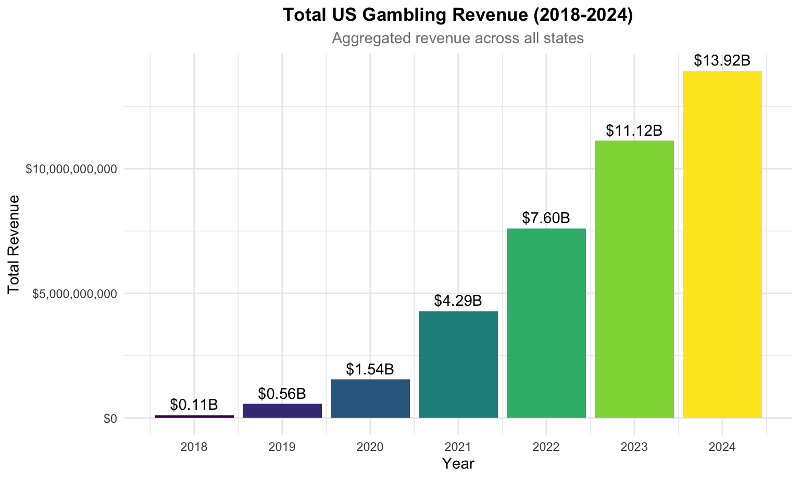
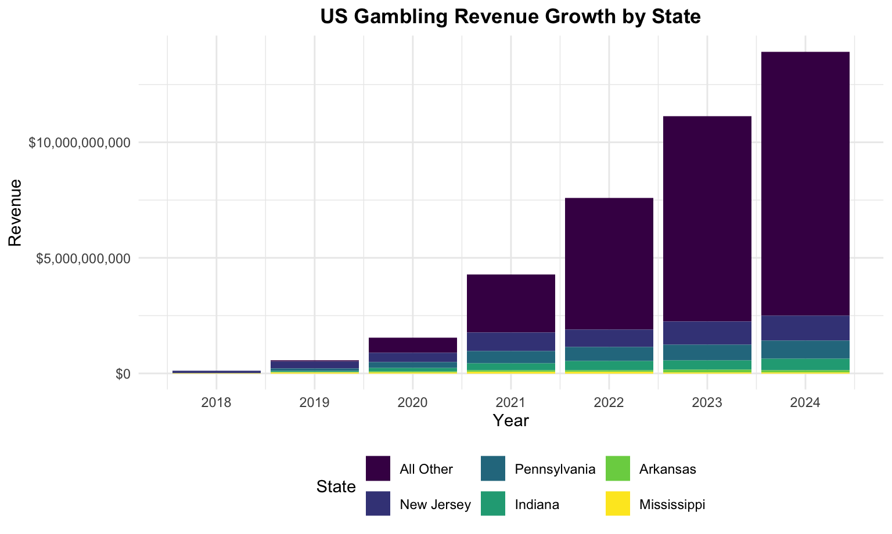
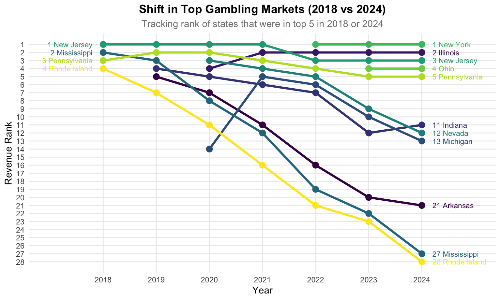
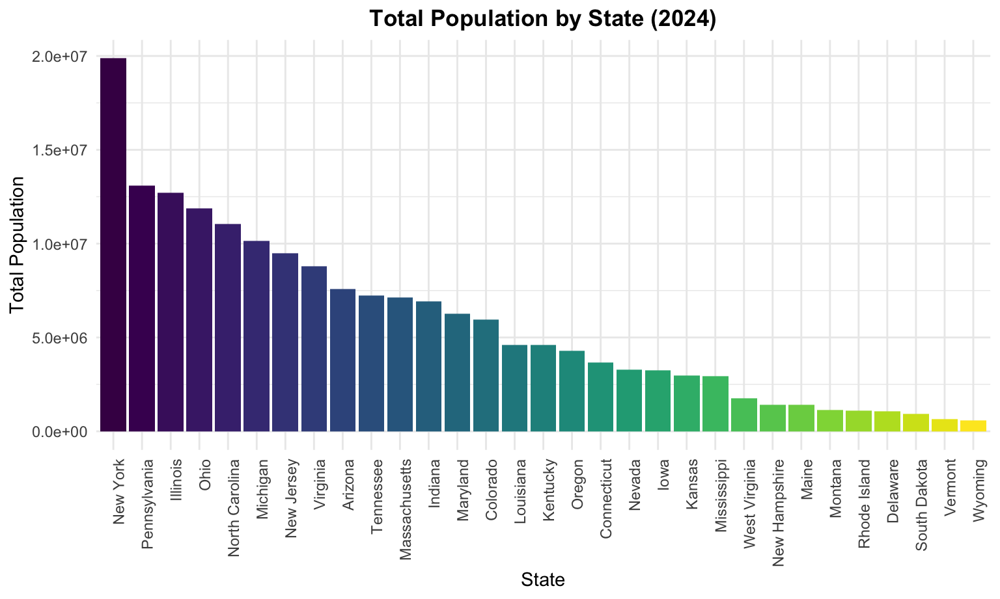
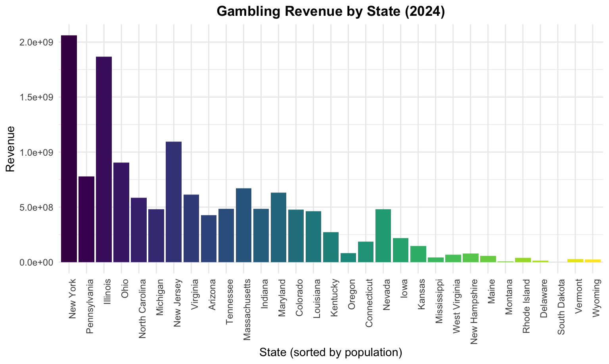
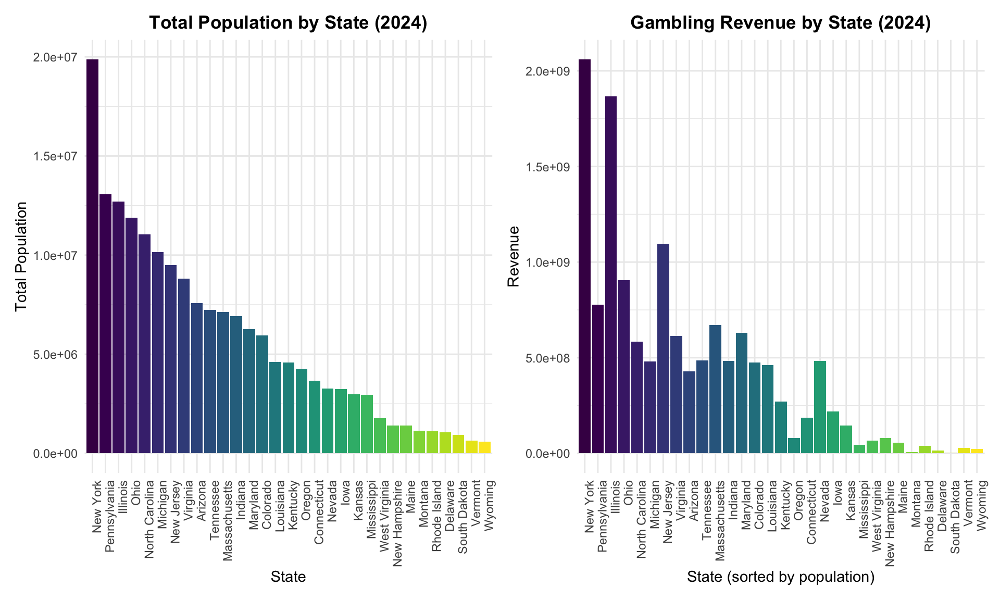
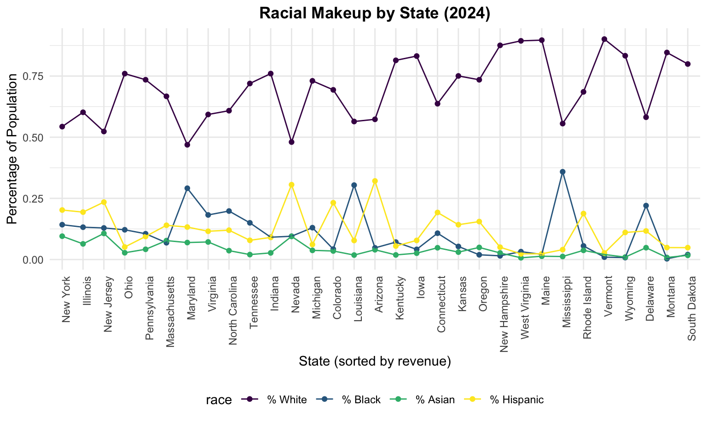
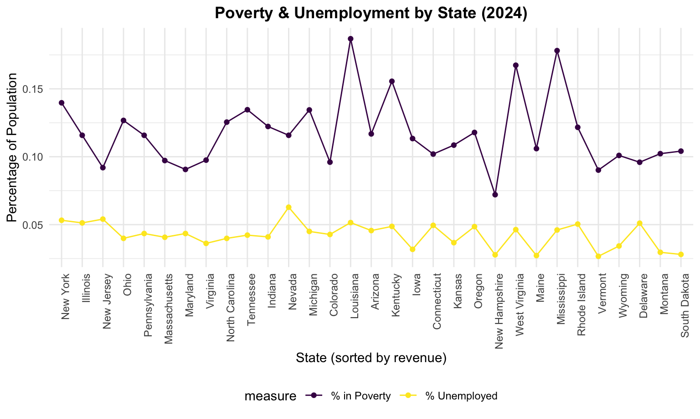
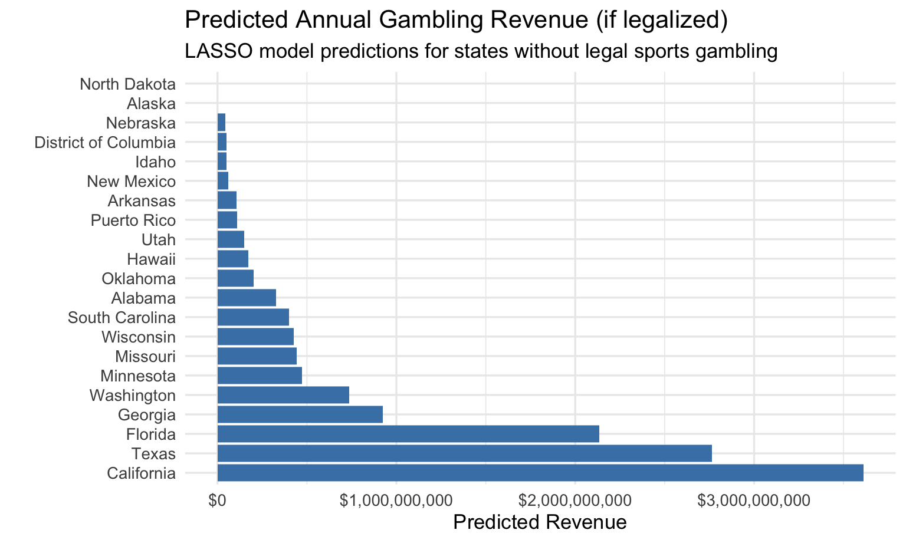
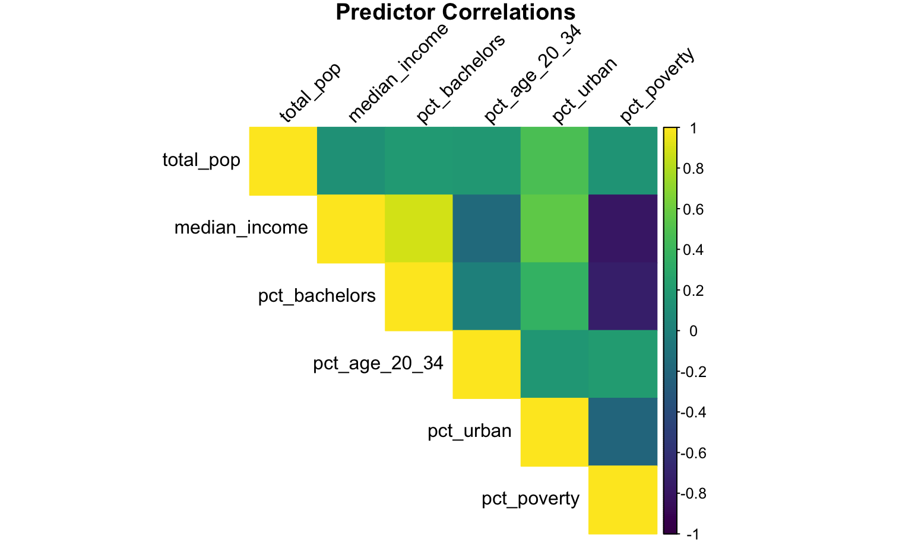

Sports Betting Analysis
Team: Zakari, Kimia, Law & Sukhman
2025 Data Science I (P8105)
Exploratory Data Analysis
Import Data
total_state_revenue = read_csv("data/total_state_revenue.csv")
model_clean_2024 = read_csv("data/model_clean_2024.csv")
demographics_2024 = read_csv("data/demographics_2024.csv")Gambling Visuals
Revenue by Year
# Aggregate total revenue by year
yearly_revenue_summary = total_state_revenue |>
group_by(Year) |>
summarize(Total_Revenue = sum(Revenue, na.rm = TRUE))
yearly_revenue_summary |>
ggplot(aes(x = Year, y = Total_Revenue)) +
geom_col(aes(fill = as.factor(Year)), show.legend = FALSE) +
geom_text(aes(label = scales::dollar(Total_Revenue, scale = 1e-9, suffix = "B")),
vjust = -0.5) + # Add labels in Billions
scale_y_continuous(labels = scales::dollar_format()) +
scale_x_continuous(breaks = 2018:2024) +
labs(
title = "Total US Gambling Revenue (2018-2024)",
subtitle = "Aggregated revenue across all states",
x = "Year",
y = "Total Revenue"
)
Growth by State
# Identify top 5 states by 2024 revenue to keep things looking clean
top_states = total_state_revenue |>
filter(Year == 2019) |>
slice_max(Revenue, n = 5) |>
pull(State)
state_growth_plot_data = total_state_revenue |>
mutate(
State_Group = ifelse(State %in% top_states, State, "All Other")
) |>
group_by(Year, State_Group) |>
summarize(Revenue = sum(Revenue, na.rm = TRUE), .groups = "drop") |>
mutate(State_Group = fct_reorder(State_Group, Revenue, .desc = TRUE))
ggplot(state_growth_plot_data, aes(x = Year, y = Revenue, fill = State_Group)) +
geom_col() +
scale_y_continuous(labels = scales::dollar_format()) +
scale_x_continuous(breaks = 2018:2024) +
labs(
title = "US Gambling Revenue Growth by State",
x = "Year",
y = "Revenue",
fill = "State"
)
Market Rank Shifts
# Calculate Ranks for every state, every year
ranked_data = total_state_revenue |>
group_by(Year) |>
mutate(Rank = min_rank(desc(Revenue))) |>
ungroup()
# Identify "States of Interest" - Top 5 at any point
focus_states = ranked_data |>
filter(Rank <= 5) |>
pull(State) |>
unique()
# Filter the dataset to just those states
plot_data = ranked_data |>
filter(State %in% focus_states)
plot_data |>
ggplot(aes(x = Year, y = Rank, color = State, group = State)) +
geom_point(size = 3) +
geom_line(linewidth = 1.2) +
scale_y_reverse(breaks = 1:max(plot_data$Rank, na.rm = TRUE)) +
scale_x_continuous(breaks = 2018:2024) +
geom_text(data = plot_data |> filter(Year == 2018),
aes(label = paste(Rank, State)), x = 2017.8, hjust = 1, size = 3) +
geom_text(data = plot_data |> filter(Year == 2024),
aes(label = paste(Rank, State)), x = 2024.2, hjust = 0, size = 3) +
labs(
title = "Shift in Top Gambling Markets (2018 vs 2024)",
subtitle = "Tracking rank of states that were in top 5 in 2018 or 2024",
y = "Revenue Rank",
x = "Year"
) +
theme(
legend.position = "none",
panel.grid.minor = element_blank()
) +
coord_cartesian(xlim = c(2017, 2025))
Demographic Visuals
Population
population_plot =
model_clean_2024 |>
filter(State != "Washington D.C.") |>
mutate(
State = as.factor(State),
State = fct_reorder(State, total_pop, .desc = TRUE)
) |>
ggplot(aes(x = State, y = total_pop)) +
geom_col(aes(fill = State)) +
theme(
axis.text.x = element_text(angle = 90, hjust = 1, vjust = 1),
legend.position = "none") +
labs(
y = "Total Population",
title = "Total Population by State (2024)"
)
population_plot
Revenue
revenue_plot =
model_clean_2024 |>
filter(State != "Washington D.C.") |>
mutate(
State = as.factor(State),
State = fct_reorder(State, total_pop, .desc = TRUE)
) |>
ggplot(aes(x = State, y = Revenue)) +
geom_col(aes(fill = State)) +
theme(
axis.text.x = element_text(angle = 90, hjust = 1, vjust = 1),
legend.position = "none") +
labs(
x = "State (sorted by population)",
y = "Revenue",
title = "Gambling Revenue by State (2024)"
)
revenue_plot
Comparison
combined_revenue_population = (population_plot + revenue_plot)
combined_revenue_population
Racial Makeup
model_clean_2024 |>
filter(State != "Washington D.C.") |>
select(State, Revenue, pct_white, pct_black, pct_asian, pct_hispanic) |>
pivot_longer(
cols = pct_white:pct_hispanic,
names_to = "race",
values_to = "percentage"
) |>
mutate(
State = as.factor(State),
State = fct_reorder(State, Revenue, .desc = TRUE),
race = factor(race,
levels = c("pct_white", "pct_black", "pct_asian", "pct_hispanic"),
labels = c("% White", "% Black", "% Asian", "% Hispanic"))
) |>
ggplot(aes(x = State, y = percentage, color = race, group = race)) +
geom_point() +
geom_line() +
theme(axis.text.x = element_text(angle = 90, hjust = 1, vjust = 1)) +
labs(
x = "State (sorted by revenue)",
y = "Percentage of Population",
title = "Racial Makeup by State (2024)",
fill = "Race"
) 
Economic Stats
model_clean_2024 |>
filter(State != "Washington D.C.") |>
select(State, Revenue, unemployment_rate, pct_poverty) |>
pivot_longer(
cols = c("pct_poverty", "unemployment_rate"),
names_to = "measure",
values_to = "percentage"
) |>
mutate(
State = as.factor(State),
State = fct_reorder(State, Revenue, .desc = TRUE),
measure = factor(measure,
levels = c("pct_poverty", "unemployment_rate"),
labels = c("% in Poverty", "% Unemployed"))
) |>
ggplot(aes(x = State, y = percentage, color = measure, group = measure)) +
geom_point() +
geom_line() +
theme(axis.text.x = element_text(angle = 90, hjust = 1, vjust = 1)) +
labs(
x = "State (sorted by revenue)",
y = "Percentage of Population",
title = "Poverty & Unemployment by State (2024)",
fill = "Measure"
) 
Predictive Modeling
Model Setup
We begin by building our training dataset and handling missing values.
# Build training dataset
training_data <- model_clean_2024 |>
select(
State, Revenue, total_pop, median_income,
pct_bachelors, pct_age_20_34, pct_urban, pct_poverty
) |>
drop_na()
states_no_gambling <- demographics_2024 |>
anti_join(training_data, by = "State")
newdata_illegal <- states_no_gambling |>
select(
State, total_pop, median_income, pct_bachelors,
pct_age_20_34, pct_urban, pct_poverty
) |>
drop_na()LASSO Regression
We implement a LASSO regression to handle multicollinearity and perform feature selection.
# Build design matrix
X_train <- model.matrix(
Revenue ~ total_pop + median_income + pct_bachelors +
pct_age_20_34 + pct_urban + pct_poverty,
data = training_data)[, -1]
y_train <- training_data$Revenue
set.seed(123)
# Cross-validated LASSO
lasso_cv <- cv.glmnet(X_train, y_train, alpha = 1, nfolds = 5, standardize = TRUE)
lasso_model <- glmnet(X_train, y_train, alpha = 1, lambda = lasso_cv$lambda.min, standardize = TRUE)
# Predictions for non-gambling states
X_new <- model.matrix(
~ total_pop + median_income + pct_bachelors +
pct_age_20_34 + pct_urban + pct_poverty,
data = newdata_illegal)[, -1]
pred_illegal_lasso <- newdata_illegal |>
mutate(
predicted_revenue_lasso = as.numeric(predict(lasso_model, newx = X_new)),
predicted_revenue_lasso = pmax(predicted_revenue_lasso, 0) # Remove negative predictions
) |>
arrange(desc(predicted_revenue_lasso))Prediction Results
pred_table <- pred_illegal_lasso |>
mutate(
Predicted_Revenue = dollar(predicted_revenue_lasso),
Population = comma(total_pop),
Median_Income = dollar(median_income)
) |>
select(
State, Population, Median_Income, pct_bachelors,
pct_age_20_34, pct_urban, pct_poverty, Predicted_Revenue
)
kable(pred_table, format = "html",
caption = "Predicted Annual Gambling Revenue for Non-Legal States (LASSO Model)") |>
kable_styling(full_width = FALSE, bootstrap_options = c("striped", "hover", "condensed"))| State | Population | Median_Income | pct_bachelors | pct_age_20_34 | pct_urban | pct_poverty | Predicted_Revenue |
|---|---|---|---|---|---|---|---|
| California | 39,431,263 | $100,149 | 0.3812365 | 0.0652504 | 0.9423663 | 0.1180257 | $3,611,645,904 |
| Texas | 31,290,831 | $79,721 | 0.3516383 | 0.0694787 | 0.8372028 | 0.1340909 | $2,765,125,447 |
| Florida | 23,372,215 | $77,735 | 0.3583638 | 0.0582353 | 0.9153419 | 0.1204723 | $2,135,268,431 |
| Georgia | 11,180,878 | $79,991 | 0.3631028 | 0.0673810 | 0.7406697 | 0.1258716 | $922,707,171 |
| Washington | 7,958,180 | $99,389 | 0.4101713 | 0.0616117 | 0.8337185 | 0.0993223 | $736,907,744 |
| Minnesota | 5,793,151 | $87,117 | 0.4003043 | 0.0634185 | 0.7187871 | 0.0933292 | $471,813,698 |
| Missouri | 6,245,466 | $71,589 | 0.3347161 | 0.0670586 | 0.6946748 | 0.1226321 | $443,937,391 |
| Wisconsin | 5,960,975 | $77,488 | 0.3455598 | 0.0673242 | 0.6708314 | 0.1032844 | $425,197,336 |
| South Carolina | 5,478,831 | $72,350 | 0.3333325 | 0.0634482 | 0.6794803 | 0.1325996 | $398,844,164 |
| Alabama | 5,157,699 | $66,659 | 0.2985358 | 0.0643101 | 0.5773724 | 0.1518804 | $327,792,352 |
| Oklahoma | 4,095,393 | $66,148 | 0.2931934 | 0.0701015 | 0.6462195 | 0.1490811 | $201,795,708 |
| Hawaii | 1,446,146 | $100,745 | 0.3775749 | 0.0586905 | 0.8606301 | 0.0998640 | $172,063,243 |
| Utah | 3,503,613 | $96,658 | 0.3911757 | 0.0874363 | 0.8978141 | 0.0832570 | $148,267,944 |
| Puerto Rico | 3,203,295 | $27,213 | 0.2969966 | 0.0663738 | 0.9187534 | 0.3730844 | $111,180,446 |
| Arkansas | 3,088,354 | $62,106 | 0.2711732 | 0.0664785 | 0.5547613 | 0.1553574 | $107,040,120 |
| New Mexico | 2,130,256 | $67,816 | 0.3178310 | 0.0681773 | 0.7454714 | 0.1641940 | $61,324,867 |
| Idaho | 2,001,619 | $81,166 | 0.3302656 | 0.0708042 | 0.6924218 | 0.1046070 | $51,404,787 |
| District of Columbia | 702,250 | $109,707 | 0.6546496 | 0.0729740 | 1.0000000 | 0.1731169 | $51,027,257 |
| Nebraska | 2,005,466 | $76,376 | 0.3535887 | 0.0714562 | 0.7300536 | 0.1087362 | $43,401,693 |
| Alaska | 740,133 | $95,665 | 0.3275460 | 0.0682283 | 0.6489949 | 0.1016680 | $0 |
| North Dakota | 796,568 | $77,871 | 0.3395173 | 0.0773305 | 0.6096684 | 0.1112829 | $0 |
Visualizing Predictions
pred_illegal_lasso_plot <- pred_illegal_lasso |>
mutate(State = factor(State, levels = State)) # Maintain sorted order
ggplot(pred_illegal_lasso_plot, aes(x = State, y = predicted_revenue_lasso)) +
geom_col(fill = "steelblue") +
coord_flip() +
scale_y_continuous(labels = dollar) +
labs(
title = "Predicted Annual Gambling Revenue (if legalized)",
subtitle = "LASSO model predictions for states without legal sports gambling",
x = "",
y = "Predicted Revenue"
) +
theme_minimal(base_size = 13)
Model Diagnostics
Feature Importance
coef_mat <- as.matrix(coef(lasso_cv, s = "lambda.min"))
coef_df <- tibble(
variable = rownames(coef_mat),
coefficient = coef_mat[, "lambda.min"]
) %>%
filter(variable != "(Intercept)") %>%
arrange(desc(abs(coefficient)))
ggplot(coef_df, aes(x = reorder(variable, abs(coefficient)),
y = coefficient,
fill = coefficient > 0)) +
geom_col() +
coord_flip() +
scale_fill_manual(values = c("TRUE" = "#1b9e77", "FALSE" = "#d95f02"), guide = "none") +
labs(
title = "LASSO Coefficients at λ_min",
subtitle = "Positive (Green) vs Negative (Orange) Impact",
x = "",
y = "Coefficient Estimate"
) +
theme_minimal(base_size = 13)
Correlation Map
predictor_mat <- training_data %>%
select(total_pop, median_income, pct_bachelors, pct_age_20_34,
pct_urban, pct_poverty) %>%
as.matrix()
corr_mat <- cor(predictor_mat)
corrplot(
corr_mat,
method = "color",
type = "upper",
col = viridis(200),
tl.col = "black",
tl.srt = 45,
title = "Predictor Correlations",
mar = c(0,0,1,0)
)
Actual vs Predicted
pred_lasso_train <- as.numeric(predict(lasso_model, newx = X_train))
training_data_lasso <- training_data %>%
mutate(pred_lasso = pred_lasso_train)
ggplot(training_data_lasso, aes(x = Revenue, y = pred_lasso)) +
geom_point(alpha = 0.7, color = "darkgreen", size = 3) +
geom_abline(slope = 1, intercept = 0, linetype = "dashed", color = "red") +
scale_x_continuous(labels = dollar) +
scale_y_continuous(labels = dollar) +
labs(
title = "Actual vs Predicted Revenue (LASSO)",
x = "Actual Revenue",
y = "Predicted Revenue"
) +
theme_minimal(base_size = 13)
Conclusion
We compared a standard linear regression to a LASSO regularized model. Both models have sizeable error due to the extreme variability in state gambling revenues. While the linear model slightly outperforms LASSO in RMSE, the LASSO model achieves a much better MAPE (191% vs 344%), indicating more stable performance for low-revenue states.
LASSO also provides valuable model simplification: only two
predictors retain nonzero coefficients—pct_age_20_34 and
pct_urban, while income, population, poverty, and education
are shrunk to zero. This suggests strong multicollinearity among
socioeconomic indicators, with LASSO consolidating their predictive
signal into a smaller set of variables. The results highlight that
demographic structure (pct_age_20_34) and urbanization are
the strongest predictors of sports gambling markets.
Go back home